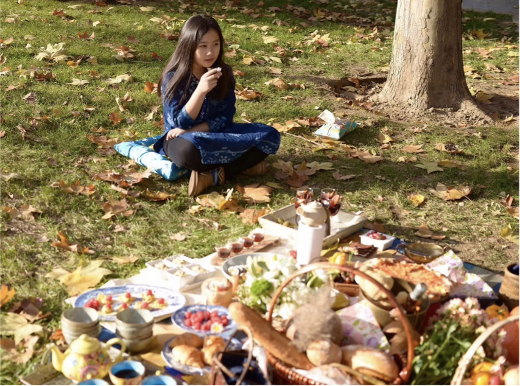

In a turn of events, Alicia moved back to her old Beijing home, but still remained at the same school and had the same friends
She mentions that she skipped a day of school during middle school for a reason she'll never regret.
"[I went] to a concert in Guangzhou. I don’t regret it, because that group disbanded after that tour. Looking back, it still feels kind of surreal."
—Alicia
She notes that the internet and its culture helped her discover her hobbies, such as:
However, admist the self discovery, she found out that what mattered most to her was her art. Additionally, she mentions that she became "more certain" that she wanted to study art.
